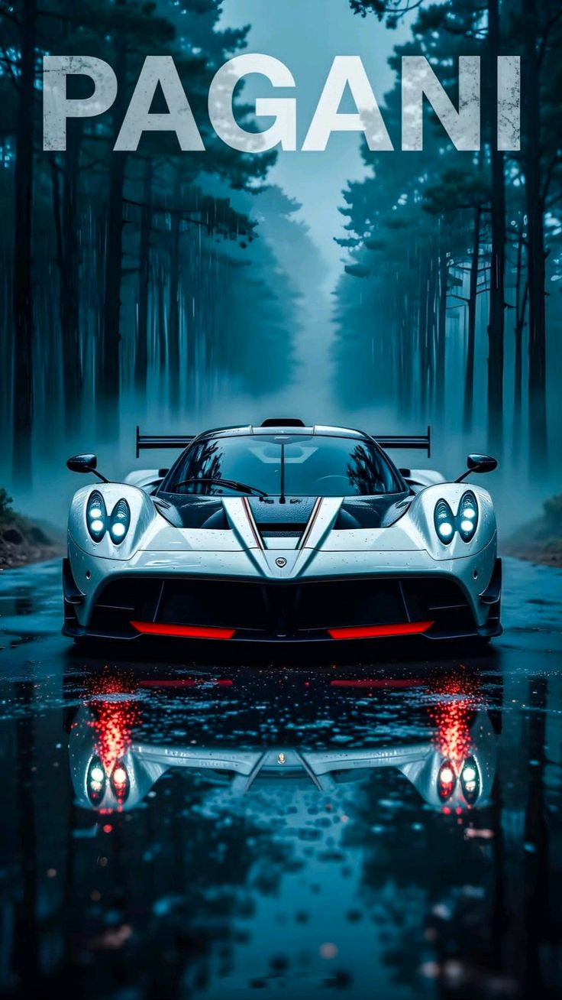
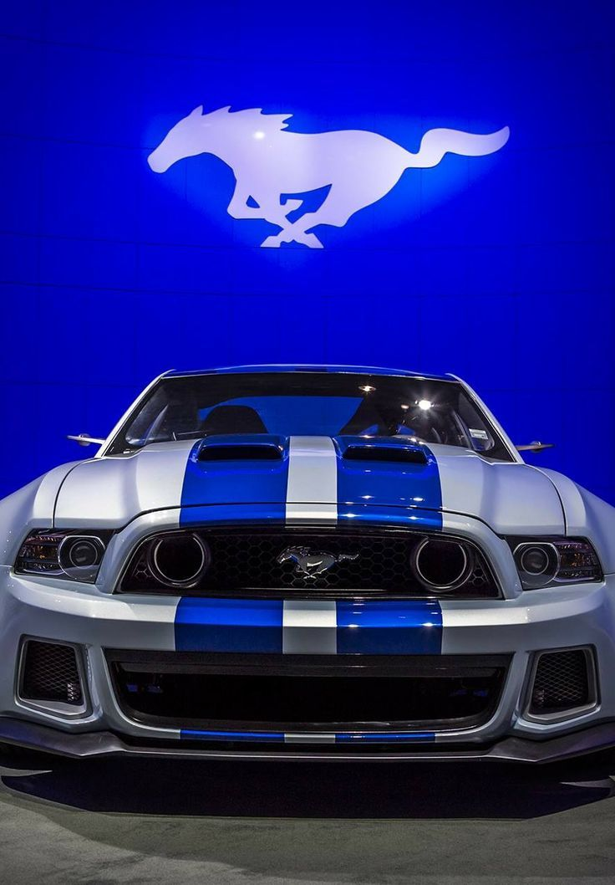
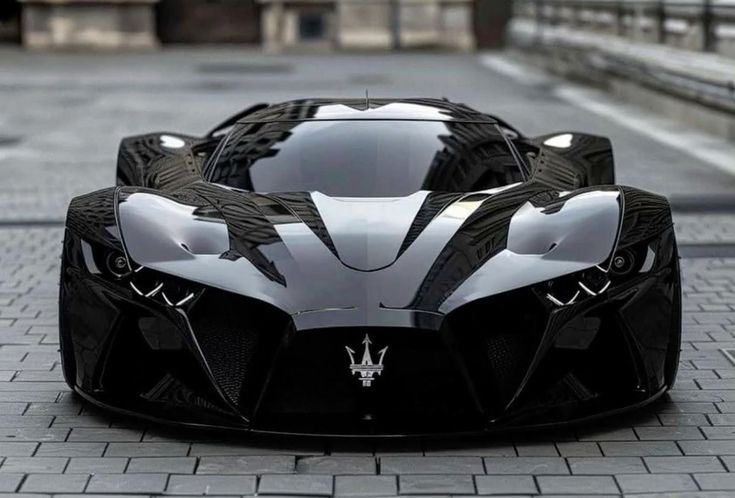
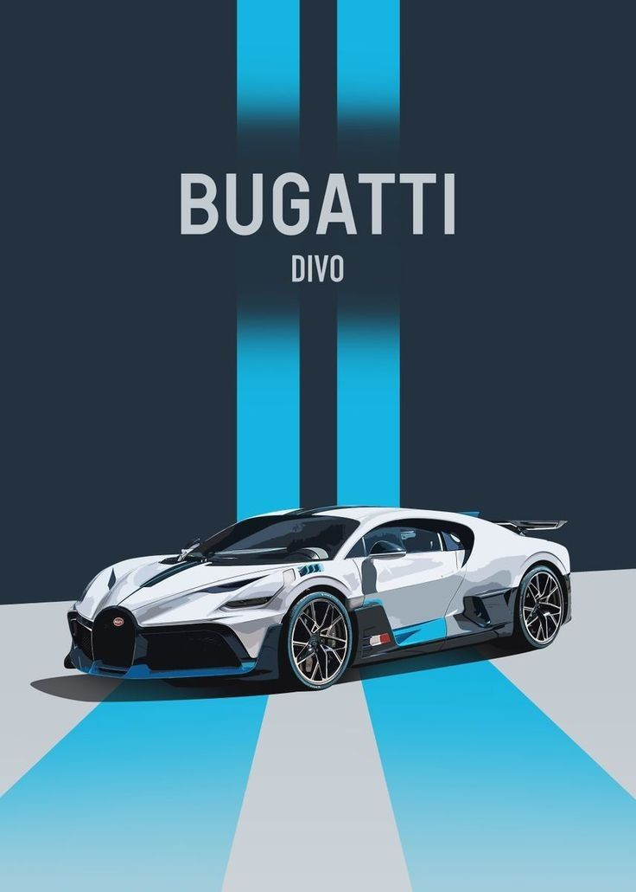

THE DODGE CAT
The Dodge Cat Car is not built.It is **born fast**.Engine:6.2-liter *Feline
Fury* V8 (unofficially powered by spite, zoomies, and midnight thoughts)
Cold start sounds like a low growl that turns into a purr at idle.Top Speed:**0–60 mph in **3.1 seconds,
0–60 when it *feels like it*: faster.Top speed is “fast enough that dogs stop chasing.”Handling
Razor-sharp. Corners are dodged, not turned.Traction control is optional—Dodge Cat Car prefers
controlled chaos.Fuel Economy:Runs on premium gasoline and compliments.Mileage drops significantly when
annoyed.
THE ROLLS ROYCE
The Rolls-Royce did not announce its speed.It waited.
Beneath the long, polished hood rested a **6.75-liter V12**, an engine tuned not to roar but to
**whisper authority**. When it started, the sound barely disturbed the air, as if the car were asking
permission before bending physics.On the open road, the driver pressed the accelerator gently.
The Rolls-Royce responded with effortless motion—no drama, no strain. **0 to 60 in just over four
seconds**, yet it felt slower, calmer, as though time itself had been upholstered in leather and
soundproofed.At highway speed, the cabin remained silent. Wind forgot to exist. The road’s
imperfections were erased by adaptive suspension that read the asphalt ahead, smoothing the future
before it arrived. Speed came and went unnoticed; only the scenery seemed to move faster, humbled.
This was not a car that chased limits. It **arrived at them first and waited*

THE PAGANI
The Pagani did not move like a car.It unfolded.At rest, it looked like
sculpture—carbon fiber woven tighter than a secret, aluminum polished by hand, every bolt signed by the
person who trusted it with perfection. Beneath the glass engine cover lived its heart: a **hand-built
AMG V12**, twin-turbocharged, breathing fire with discipline.When the ignition turned, the engine
didn’t simply start.It **cleared its throat**.The sound was sharp, metallic, alive—12 cylinders singing in
exact order, each note intentional. With over **800 horsepower** waiting patiently, the Pagani did not
lunge forward. It *asked*.Then came the acceleration.The road collapsed beneath it. **0–60 mph in under
three seconds**, delivered not with chaos but with terrifying clarity. Every input—steering, throttle,
braking—felt direct, unfiltered, as if the car had removed the space between thought and action.

THE MUSTANG
The Mustang woke up angry—in a good way.Under its long hood sat a **5.0-liter
Coyote V8**, breathing deep, ready to run. When the engine fired, it didn’t whisper or ask permission.
It **announced itself**, a raw growl that echoed off concrete walls and made the night feel smaller.
The driver eased onto the road, then pressed down. The Mustang surged forward, power rushing through the
rear wheels like muscle memory. **0–60 in about four seconds**, the tach climbing fast, the exhaust
cracking with every shift. This wasn’t silent speed—it was **honest speed**, loud and proud.
PORSCHE 911
The Porsche 911 woke up angry—in a good way.Under its long hood sat a **5.0-liter
Coyote V8**, breathing deep, ready to run. When the engine fired, it didn’t whisper or ask permission.
It **announced itself**, a raw growl that echoed off concrete walls and made the night feel smaller.
The driver eased onto the road, then pressed down. The Porsche surged forward, power rushing through the
rear wheels like muscle memory. **0–60 in about four seconds**, the tach climbing fast, the exhaust
cracking with every shift. This wasn’t silent speed—it was **honest speed**, loud and proud.
THE Land cruiser prado
The Land Cruiser Prado did not move like a car.It unfolded.At rest, it looked like
sculpture—carbon fiber woven tighter than a secret, aluminum polished by hand, every bolt signed by the
person who trusted it with perfection. Beneath the glass engine cover lived its heart: a **hand-built
AMG V12**, twin-turbocharged, breathing fire with discipline.When the ignition turned, the engine
didn’t simply start.It **cleared its throat**.The sound was sharp, metallic, alive—12 cylinders singing in
exact order, each note intentional. With over **800 horsepower** waiting patiently, the Pagani did not
lunge forward. It *asked*.Then came the acceleration.The road collapsed beneath it. **0–60 mph in under
three seconds**, delivered not with chaos but with terrifying clarity. Every input—steering, throttle,
braking—felt direct, unfiltered, as if the car had removed the space between thought and action.
THE Nissan GTR
The Nissan GTR did not announce its speed.It waited.
Beneath the long, polished hood rested a **6.75-liter V12**, an engine tuned not to roar but to
**whisper authority**. When it started, the sound barely disturbed the air, as if the car were asking
permission before bending physics.On the open road, the driver pressed the accelerator gently.
The Nissan GTR responded with effortless motion—no drama, no strain. **0 to 60 in just over four
seconds**, yet it felt slower, calmer, as though time itself had been upholstered in leather and
soundproofed.At highway speed, the cabin remained silent. Wind forgot to exist. The road’s
imperfections were erased by adaptive suspension that read the asphalt ahead, smoothing the future
before it arrived. Speed came and went unnoticed; only the scenery seemed to move faster, humbled.
This was not a car that chased limits. It **arrived at them first and waited*

The Maserati
The Maserati woke up angry—in a good way.Under its long hood sat a **5.0-liter
Coyote V8**, breathing deep, ready to run. When the engine fired, it didn’t whisper or ask permission.
It **announced itself**, a raw growl that echoed off concrete walls and made the night feel smaller.
The driver eased onto the road, then pressed down. The Maserati surged forward, power rushing through the
rear wheels like muscle memory. **0–60 in about four seconds**, the tach climbing fast, the exhaust
cracking with every shift. This wasn’t silent speed—it was **honest speed**, loud and proud.

THE BMW
The BMW Car is not built.It is **born fast**.Engine:6.2-liter *Feline
Fury* V8 (unofficially powered by spite, zoomies, and midnight thoughts)
Cold start sounds like a low growl that turns into a purr at idle.Top Speed:**0–60 mph in **3.1 seconds,
0–60 when it *feels like it*: faster.Top speed is “fast enough that dogs stop chasing.”Handling
Razor-sharp. Corners are dodged, not turned.Traction control is optional—BMW Car prefers
controlled chaos.Fuel Economy:Runs on premium gasoline and compliments.Mileage drops significantly when
annoyed.
THE MAFIA SUVS
The Mafia SUV rumbled awake just as the sun dipped below the skyline, its low growl
echoing through the empty streets. From a distance, it looked like a beast dressed in
luxury—sharp lines, massive wheels, and eyes that glowed with intent. When the driver pressed
the accelerator, the Suv surged forward, blending supercar speed with SUV muscle, devouring
the road with effortless confidence. As it disappeared into the night, it proved that power
doesn’t have to sacrifice elegance—and that even a king of speed can wear a crown of
comfort.
THE FORD
The Ford Car is not built.It is **born fast**.Engine:6.2-liter *Feline
Fury* V8 (unofficially powered by spite, zoomies, and midnight thoughts)
Cold start sounds like a low growl that turns into a purr at idle.Top Speed:**0–60 mph in **3.1 seconds,
0–60 when it *feels like it*: faster.Top speed is “fast enough that dogs stop chasing.”Handling
Razor-sharp. Corners are dodged, not turned.Traction control is optional—Ford Car prefers
controlled chaos.Fuel Economy:Runs on premium gasoline and compliments.Mileage drops significantly when
annoyed.
The CHEVROLET
The Chevrolet is not built.It is **born fast**.Engine:6.2-liter *Feline
Fury* V8 (unofficially powered by spite, zoomies, and midnight thoughts)
Cold start sounds like a low growl that turns into a purr at idle.Top Speed:**0–60 mph in **3.1 seconds,
0–60 when it *feels like it*: faster.Top speed is “fast enough that dogs stop chasing.”Handling
Razor-sharp. Corners are dodged, not turned.Traction control is optional—Dodge Cat Car prefers
controlled chaos.Fuel Economy:Runs on premium gasoline and compliments.Mileage drops significantly when
annoyed.
THE LEXUS
The Lexus did not announce its speed.It waited.
Beneath the long, polished hood rested a **6.75-liter V12**, an engine tuned not to roar but to
**whisper authority**. When it started, the sound barely disturbed the air, as if the car were asking
permission before bending physics.On the open road, the driver pressed the accelerator gently.
The Lexus responded with effortless motion—no drama, no strain. **0 to 60 in just over four
seconds**, yet it felt slower, calmer, as though time itself had been upholstered in leather and
soundproofed.At highway speed, the cabin remained silent. Wind forgot to exist. The road’s
imperfections were erased by adaptive suspension that read the asphalt ahead, smoothing the future
before it arrived. Speed came and went unnoticed; only the scenery seemed to move faster, humbled.
This was not a car that chased limits. It **arrived at them first and waited*
The BUGGATI
The Buggati is not built.It is **born fast**.Engine:6.2-liter *Feline
Fury* V8 (unofficially powered by spite, zoomies, and midnight thoughts)
Cold start sounds like a low growl that turns into a purr at idle.Top Speed:**0–60 mph in **3.1 seconds,
0–60 when it *feels like it*: faster.Top speed is “fast enough that dogs stop chasing.”Handling
Razor-sharp. Corners are dodged, not turned.Traction control is optional—Buggati Car prefers
controlled chaos.Fuel Economy:Runs on premium gasoline and compliments.Mileage drops significantly when
annoyed.


.jpg)
.jpg)
.jpg)